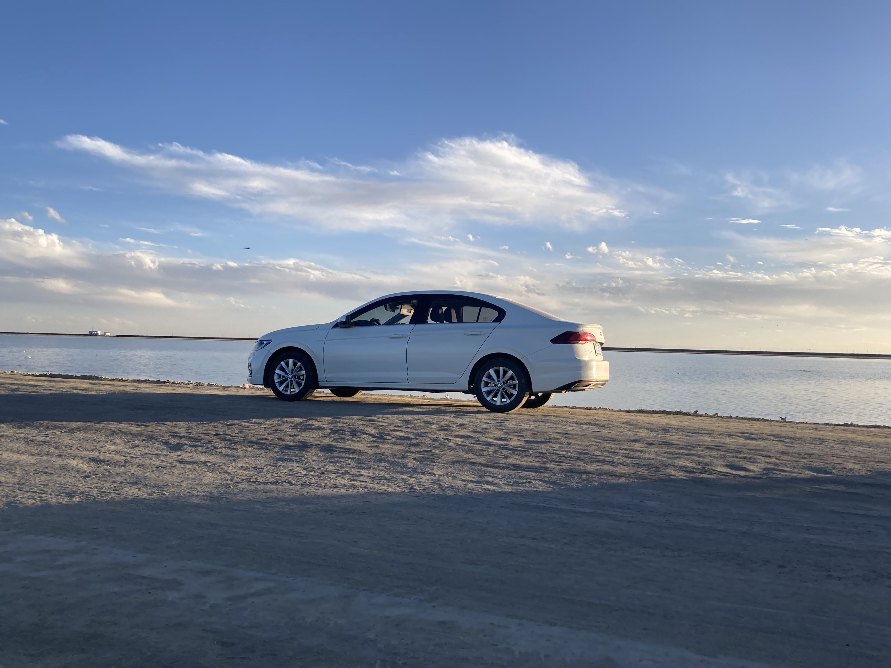

My Car
我的汽车

拍摄于西北大环线之行
型号：大众2019宝来 改款 精英型。
发动机型号：EA211-DMB 1.5L自然吸气 113马力 L4。
高速公路行驶，超车略显吃力。
在高原地带行驶，空气稀薄，供气不足，档位上不去，最多到5档。
下次买车还是得买涡轮增压。
购车时被4S店坑，无息分期，结果要收手续费，资料保管费。
再次被4S点坑，冷却液换成了无水冷却液。后无水冷却液缺失，又换回一般冷却液。
变速箱传感器换过一次。
换变速箱油被途虎坑一次，用循环法，花了一千多。手动换只需一两百。
最近，开车时，车身有点抖动，以为是车老了。今年三月保养的时候，跟修车师傅说了一下车的情况，师傅开着我的车感受了一下， 就大概确定了问题。高手！原来，是有个轮胎鼓包了。花了400块换了一个轮胎，车开着又稳了。
最近看汽车资讯，说大容量的自吸发动机耐开。如果下次换车时，汽油车还很普遍的话，买个自吸的。